Gallery
I enjoy traveling to some of the northernmost areas of the world and chasing northern lights.
Nordkapp, Tromsø, Svalbard, Greenland, Faroe Islands, even Novaya Zemlya if I got a chance.
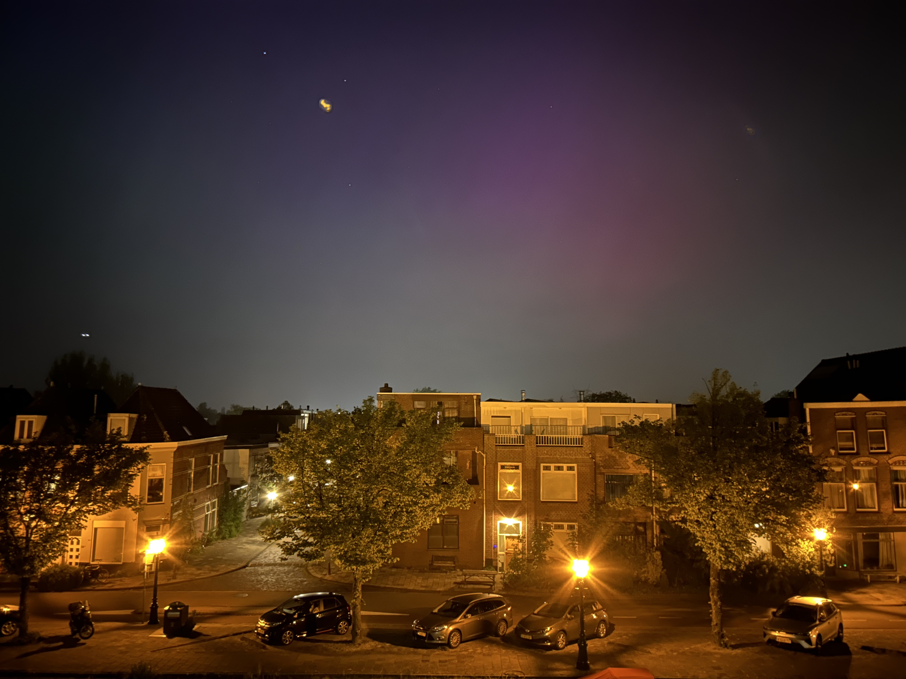
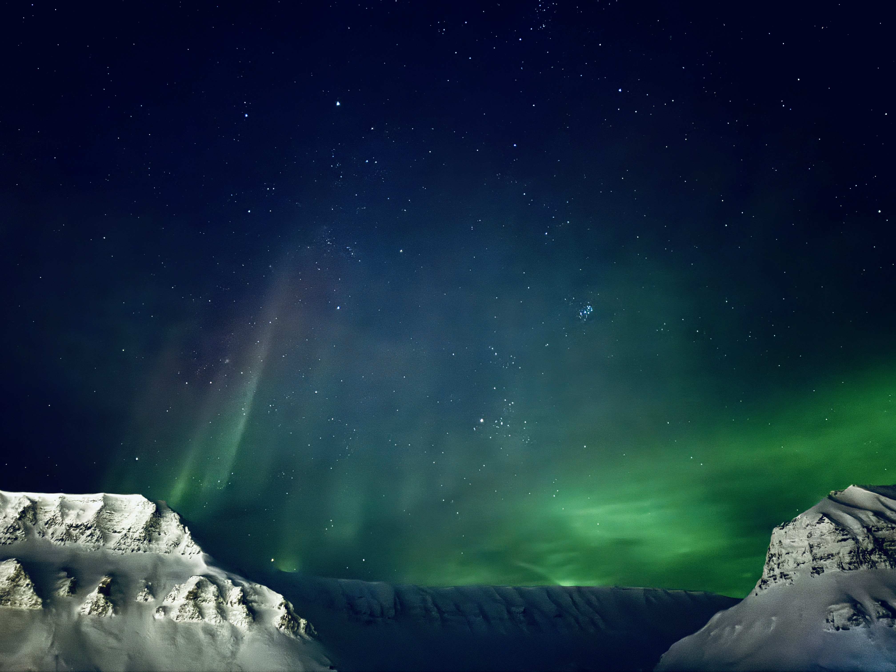
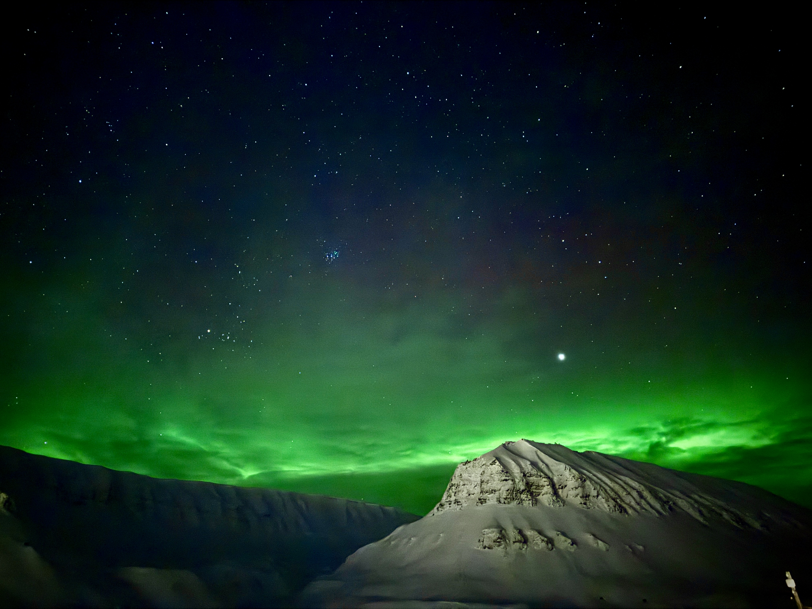


 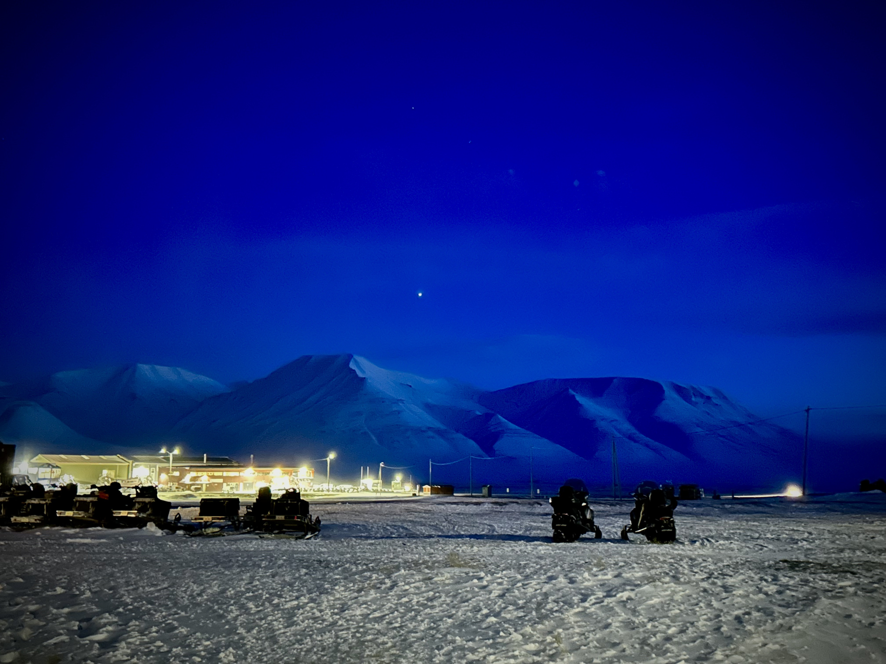
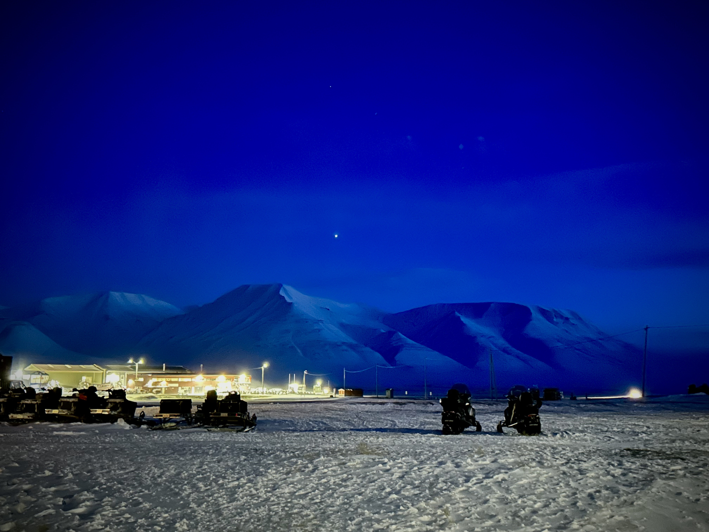


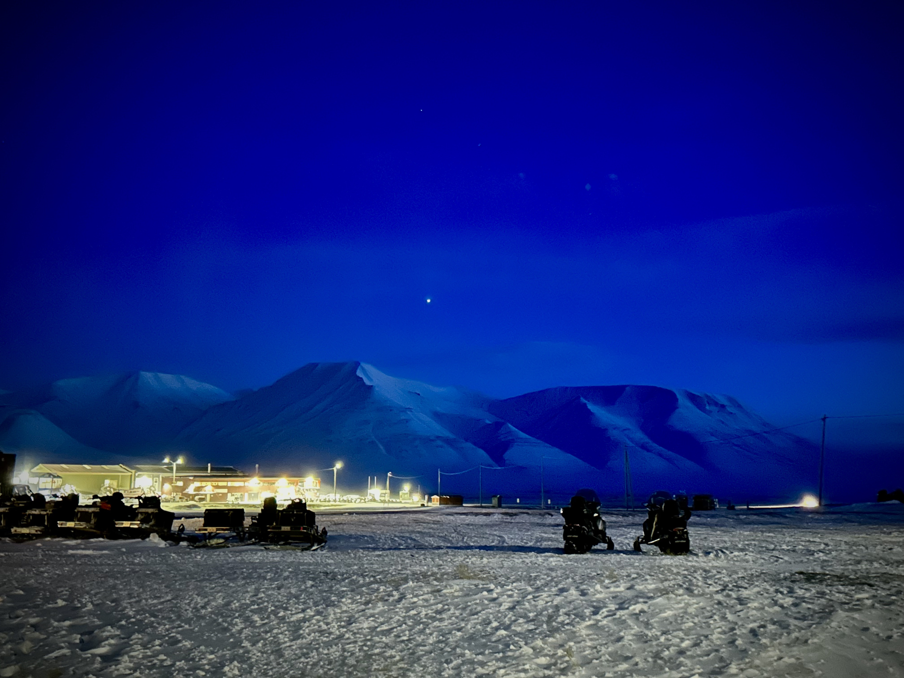
I'm a coffee and tea lover. Caffeine keeps me refreshed everyday. Why would you only choose one when you can have both?
 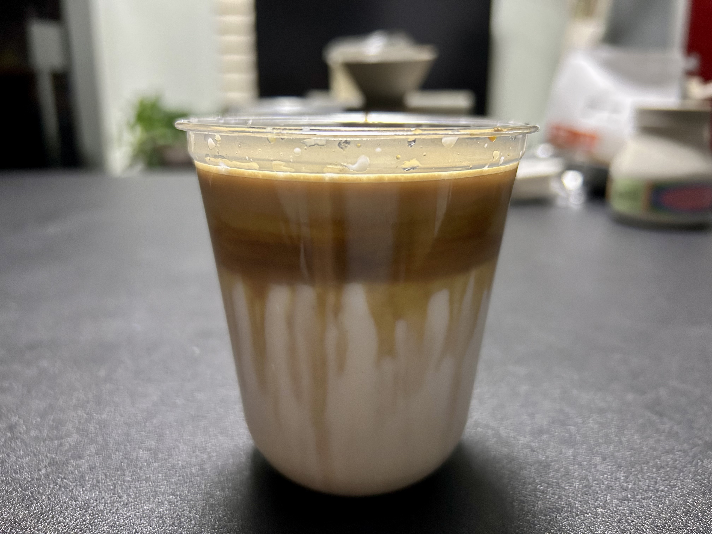
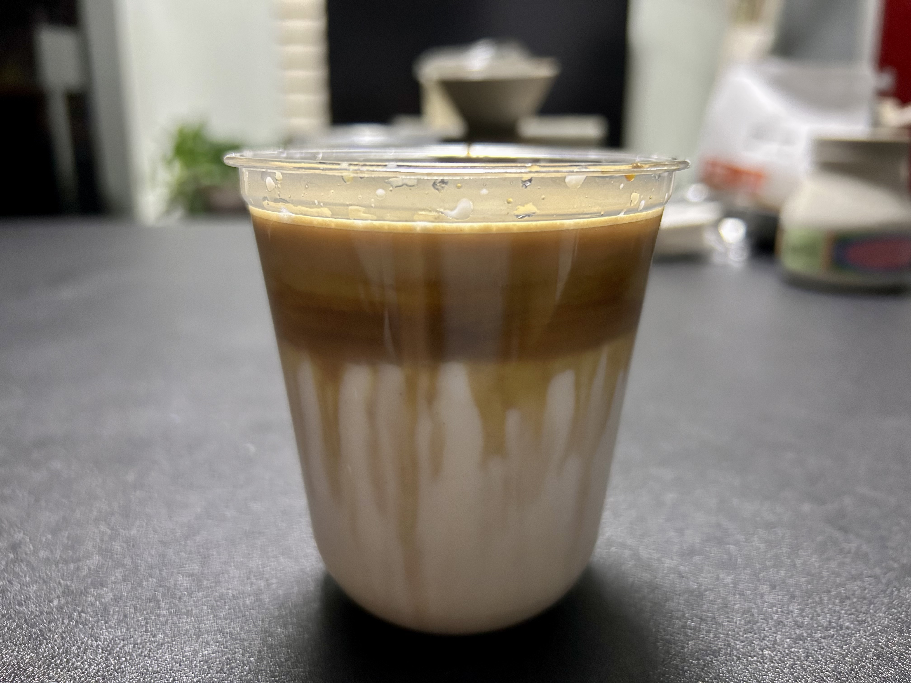
Free wheel/will never dies, I'm also a regular (pretty amateur) cyclist


 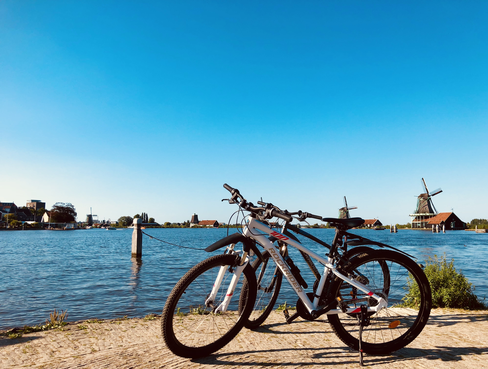
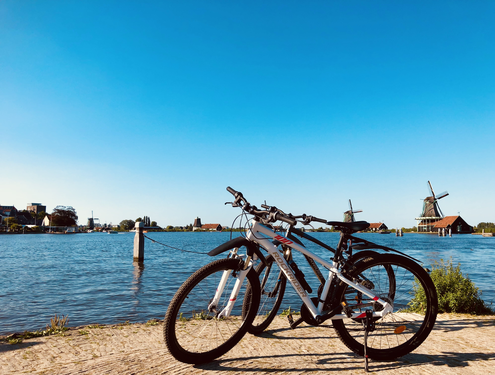

Sometimes when I got plenty of free time, instruments and Tolkien's books are my greatest spiritual reliefs.
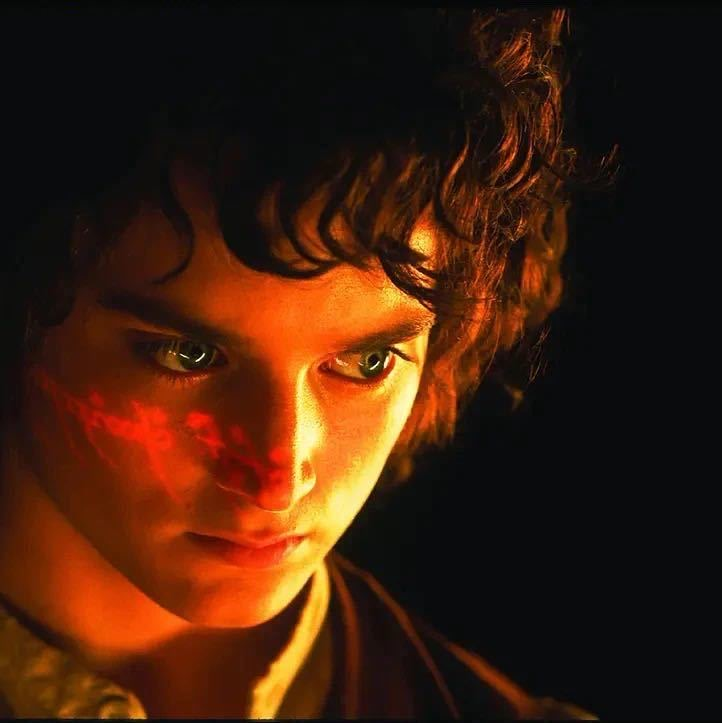
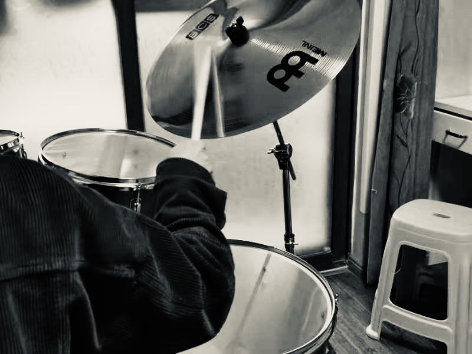
×